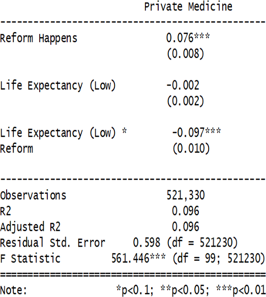

Sentiment over time — Kazakhstan Health News
Did COVID make people feel healthier?
To separate the effects of COVID from the reform, we used a difference-in-differences approach. This method tests whether an external event changes a trend we would otherwise expect in the data. Our results show that it wasn’t COVID itself, but most likely the reform, that shifted how people perceived their health. Still, during the peak of the pandemic, the QuantCovid coefficient showed a surprising uptick in the long-term trend. Why? We can only speculate. One explanation: «I didn’t die today — that’s already a success». Another: reporting better health may have been a coping mechanism — people reassuring themselves that they were healthy.
Private healthcare attitudes — not the same for everyone

Another interesting finding comes from a different dependent variable — attitudes toward private healthcare.
In regions with below-average life expectancy, these attitudes actually worsened after the reform.
It seems that people who expect to live shorter lives than the average Kazakhstani feel that private medicine
won’t make much difference for them.